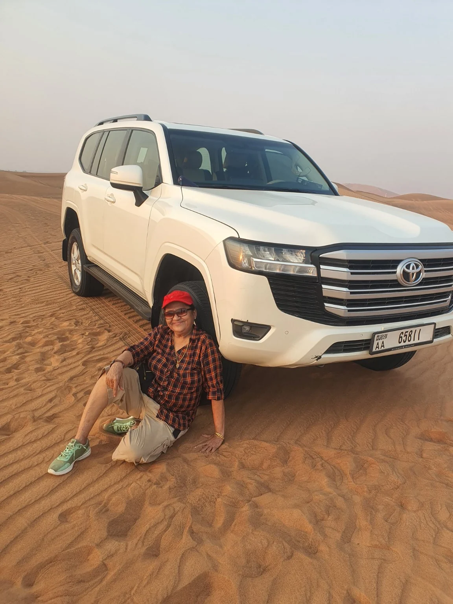
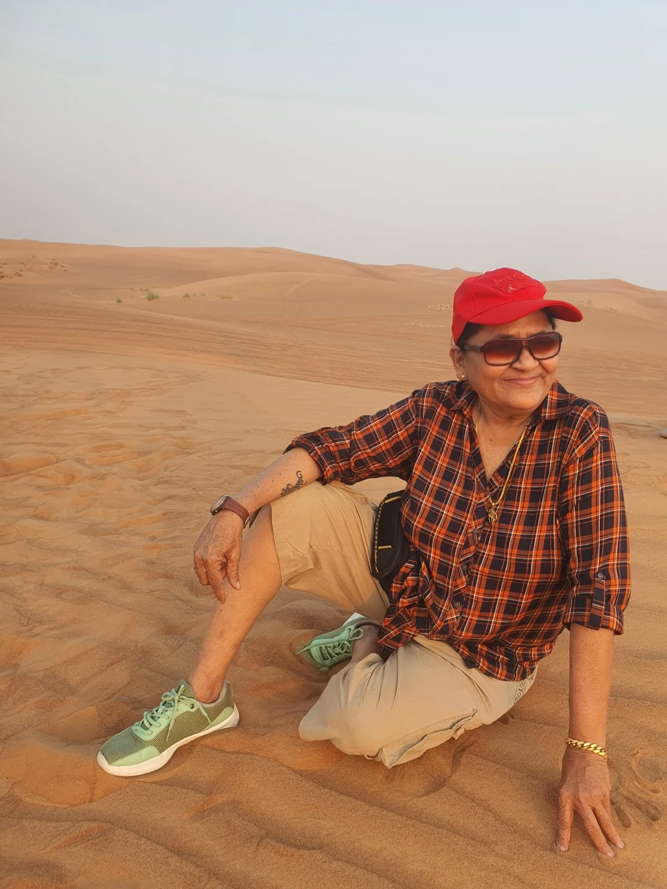
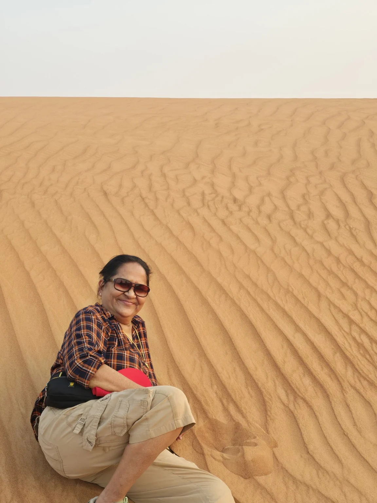
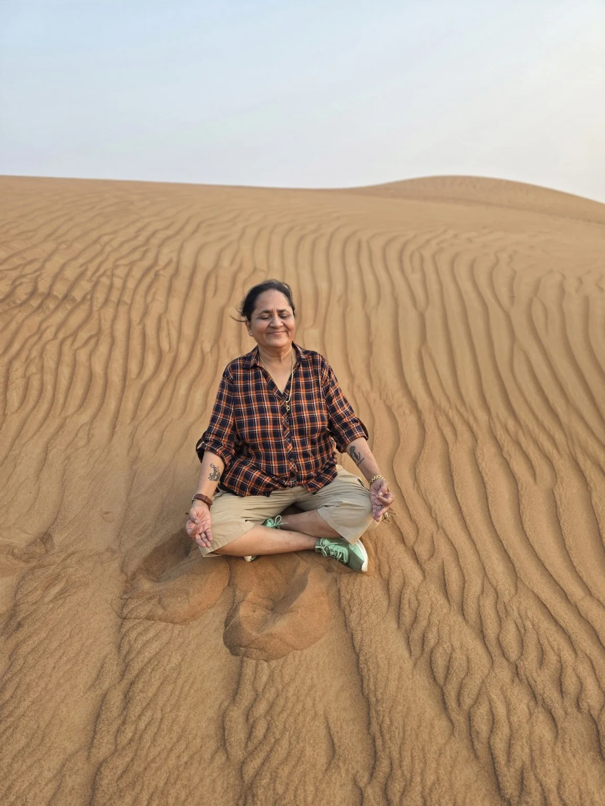
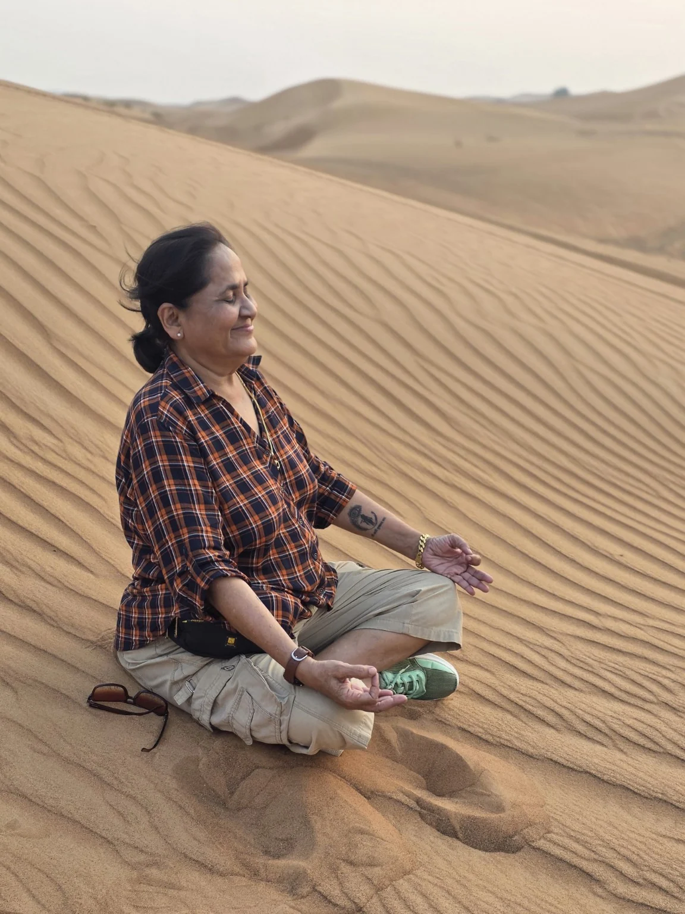
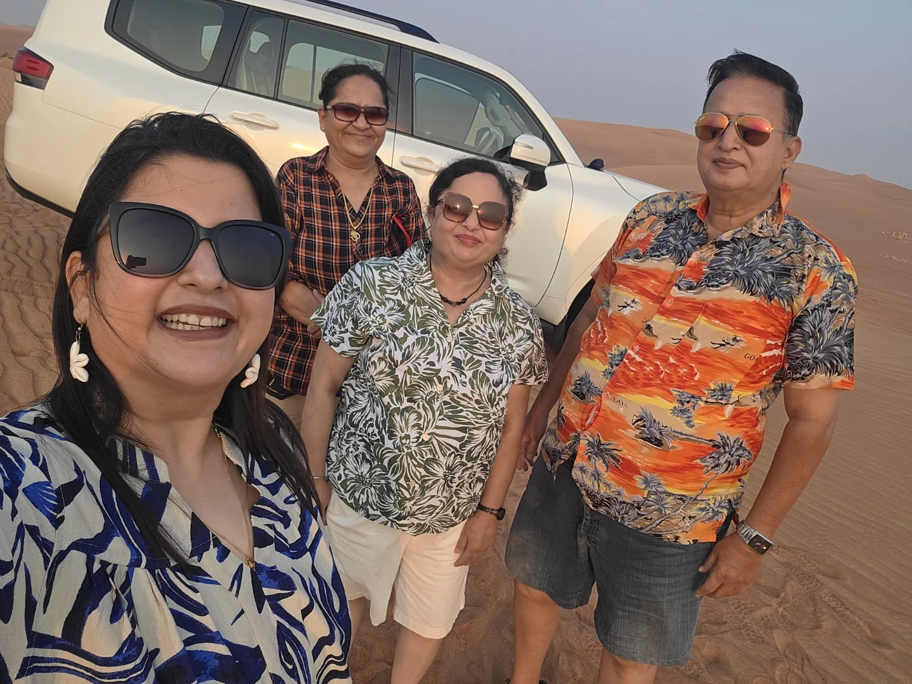
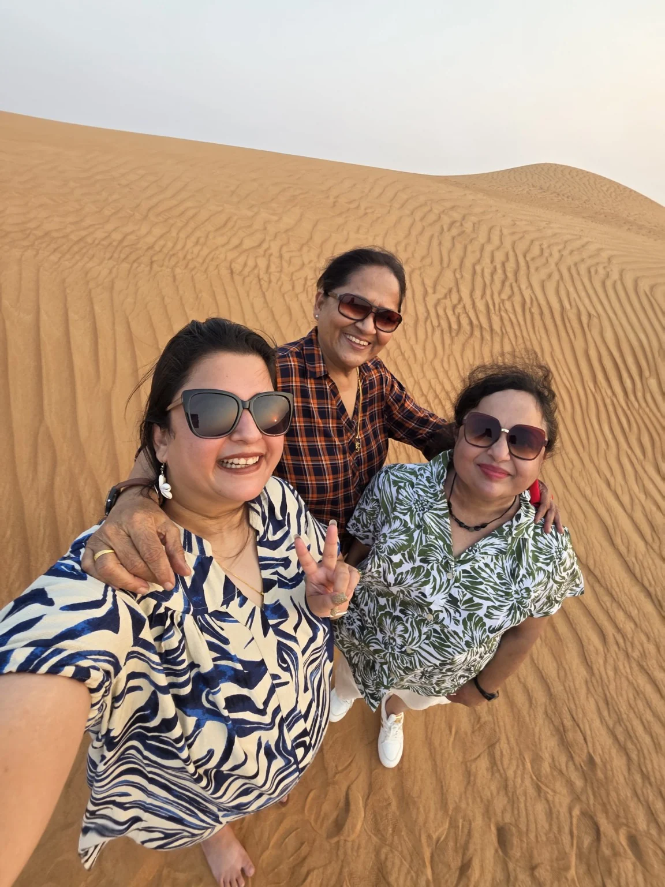

दुसऱ्या दिवशी दुपारपर्यंत आम्ही हॉटेलमध्ये निवांत विश्रांती घेतली. साधारण अडीच वाजता सर्वजण झोपेतून उठलो, फ्रेश झालो आणि दिवसाच्या खास आकर्षणासाठी सज्ज झालो. आजचा दिवस होता दुबईची जगप्रसिद्ध डेझर्ट सफारी अनुभवण्याचा! दुबई म्हटले की गगनचुंबी इमारती, आधुनिक वास्तू आणि झगमगाट डोळ्यांसमोर येतो; पण या शहराच्या आसपास पसरलेले विशाल, सोनेरी वाळवंट हेही दुबईच्या ओळखीचे एक महत्त्वाचे वैशिष्ट्य आहे.
सोनेरी वाळवंटाचे पहिले दर्शन
लांबवर पसरलेल्या पिवळसर-सोनेरी वाळूच्या उंचसखल टेकड्या पाहताना अक्षरशः आपण एखाद्या वेगळ्याच जगात आलो आहोत असे वाटत होते. महाराष्ट्रात वाढलेल्या आपल्याला हिरवीगार शेती, पाणी, झाडे, गाई-म्हशी आणि निसर्गाची समृद्धी पाहण्याची सवय आहे. त्यामुळे डोळ्यांसमोर मैलोनमैल फक्त वाळूच वाळू दिसणे हा माझ्यासाठी एक वेगळाच अनुभव होता.
निसर्गाने प्रत्येक प्रदेशाला त्याचे वेगळे वैशिष्ट्य दिले आहे. येथे शेतीची हिरवाई कमी असली, तरी तेलसंपत्ती, व्यापार, आधुनिक उद्योग आणि जागतिक दर्जाच्या विकासातून दुबईने आपली स्वतंत्र ओळख निर्माण केली आहे. त्या पार्श्वभूमीवर वाळवंटातील जीवन आणि त्यातून उभे राहिलेले हे आधुनिक शहर यांचा विरोधाभास मनाला विशेष जाणवला.
डेझर्ट सफारीचा थरार
आम्ही डेझर्ट सफारीसाठी Land Cruiser गाडी घेतली होती. वाळवंटात वाहन चालवणाऱ्या चालकांना अशा प्रकारच्या वाळूच्या टेकड्यांवर वाहन हाताळण्यासाठी विशेष प्रशिक्षण दिलेले असते. त्यामुळे आमचा ड्रायव्हर अतिशय आत्मविश्वासाने आणि कौशल्याने गाडी चालवत होता.
गाडी वाळूच्या टेकडीच्या कडेला चढत जाते आणि अचानक उतारावरून वेगाने खाली येते, पुन्हा वर चढते आणि वाळूच्या लाटांसारख्या टेकड्यांमधून पुढे सरकत राहते. त्या क्षणी मनात थोडी धाकधूक आणि त्याच वेळी प्रचंड उत्सुकता—असा विलक्षण संगम जाणवत होता. थोडे धाडस आणि भरपूर उत्साह असेल तर हा अनुभव आयुष्यभर लक्षात राहील, हे नक्की! आम्ही हा थरार मनापासून अनुभवला आणि भरपूर छायाचित्रेही काढली.
वाळवंटात माझे ध्यान — एक वेगळाच आध्यात्मिक अनुभव
योग आणि ध्यानाशी माझे नाते असल्यामुळे वाळवंटातील शांतता मला विशेष भावली. चारही बाजूंना पसरलेली निःशब्द वाळू, वाऱ्याने तयार केलेल्या लहरी आणि दूरवर दिसणाऱ्या टेकड्या—या सगळ्यांच्या मध्यभागी काही क्षण ध्यानस्थ बसताना मन अगदी शांत झाले. त्या क्षणी दुबईच्या झगमगाटापेक्षा या वाळवंटाची साधी, निःशब्द सुंदरता मला अधिक जवळची वाटली. या क्षणांचे माझ्या छायाचित्रांमध्ये जतन झालेले रूप माझ्यासाठी या प्रवासातील खास आठवण आहे.







आमचा सहप्रवास आणि मैत्रीचे सुंदर क्षण
या डेझर्ट सफारीमध्ये माझ्यासोबत पल्लवी आणि तिचे आई-वडील Mr. Jog आणि Mrs. Jog होते. वाळवंटातील या साहसात आम्ही सर्वांनी मिळून खूप मजा केली, भरपूर छायाचित्रे काढली आणि अनेक हसरे क्षण अनुभवले. प्रवासाची खरी मजा केवळ स्थळांमध्ये नसते; तर आपल्यासोबत असलेल्या जिवलग माणसांमुळे त्या आठवणी अधिक सुंदर होतात. या दिवसाची आठवण म्हणून आमचे हे समूहछायाचित्र विशेष जपून ठेवावेसे वाटते.
डेझर्ट सफारीविषयी थोडक्यात
दुबईच्या आसपासच्या वाळवंटी प्रदेशात वाळूच्या मोठमोठ्या टेकड्या आणि सतत बदलणारे वाळूचे आकार दिसतात. वाऱ्यामुळे वाळूवर सुंदर लहरी तयार होतात. डेझर्ट सफारीमध्ये साधारणपणे 4x4 वाहनातून वाळूच्या टेकड्यांवरून प्रवास, फोटोसेशन आणि विविध वाळवंटी अनुभव दिले जातात. वाहन चालवण्याचे कौशल्य आणि सुरक्षितता यांना या अनुभवात विशेष महत्त्व असते.
वाळवंटातील सूर्योदय-सूर्यास्त, बदलणारे रंग आणि शांत वातावरण यामुळे हा अनुभव पर्यटकांसाठी आकर्षक ठरतो.
दुसऱ्या दिवसाची आठवण
दुसरा दिवस पूर्णपणे डेझर्ट सफारीच्या अनुभवाने भरलेला होता. थरारक Land Cruiser सफारी, अथांग सोनेरी वाळू, वाळवंटातील शांतता, ध्यानाचे क्षण आणि पल्लवी तसेच Mr. Jog आणि Mrs. Jog यांच्यासोबतचे आनंदी क्षण—या सगळ्यांनी दिवस संस्मरणीय बनवला. दुबईच्या आधुनिक जगमगाटापेक्षा पूर्णपणे वेगळे, निसर्गाच्या विशालतेची जाणीव करून देणारे हे वाळवंट माझ्या दुबई प्रवासातील एक अविस्मरणीय पर्व ठरले.